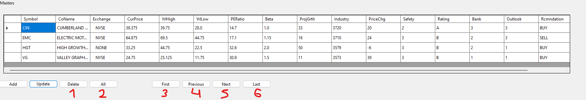

Управління акціями: Видалення та навігація
Цей розділ описує як видалити акцію та виконувати навігацію по таблиці
Видалити інформацію | Навігація по таблиці

- Видалити акцію
- Отримати список усіх акцій на біржі
- Перейти до першого запису
- Повернутись до попереднього запису
- Перейти до наступного запису
- Перейти до останнього запису